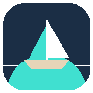

If this page loaded on the classroom Chromebox, the district filter let this address through — that was the big question. The cards below check the rest. The top ones run by themselves; the rest need a tap. When you're done, tap Copy results at the bottom and paste them to Claude (or take a photo).
Opened at
A real https address fixes YouTube's Error 153 and is what an installable app needs.
Saves a counter in this browser. Reload the page — the number should go up. That's how the board would keep your layout and rosters.
Keeps a copy of the page on this machine so it opens even when the network hiccups. Reload once for this to finish.
Chrome can add it to the shelf with its own icon, opening in its own full-screen window.
Deckhand's lettering (DM Sans) comes from Google Fonts. If it's blocked, the board falls back to a system font.
The screen and browser, for the record.
Tap, then press Esc (or tap again) to come back.
Plays the three-note chime. Did you hear it?
From a file the Chromebox refuses the mic with no question asked. A web address might be different — or the district might still say no.
Loads the Lofi Girl stream the way the YouTube card does. Does it play, or show "Error 153"?
Paste one of your deck links (the normal edit link is fine) and load it.
Tap the box, then press the clicker's forward button.
Touch the box with a finger (not the pen or a mouse).
Nothing on this page is sent anywhere — the checks run in this browser, and the results only leave it if you copy them.